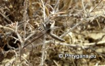

")
| PHRYGANA | Fauna | Flora | Galles | liste des espèces |
contact -
info - commentaires phrygana1 (at) gmail.com |
| Particularités crétoises | nouveautés | Mines | ressources naturelles |
| Les Neuroptera de Crète |
|
| En Crète, on compte 2 (sous)espèces au moins dans les Ascalaphidae | ||||
|  | ||||
| Bubopsis andromache | ||||
| En Crète, on compte 5 (sous)espèces au moins dans les Myrmeleontidae | ||||
|
|
|
|||
| Myrmecaelurus trigrammus | Palpares libelluloides | |||
| 15 mai 2013 |
| © paul fontaine -- © Phrygana.eu 2007 -- 2013 |